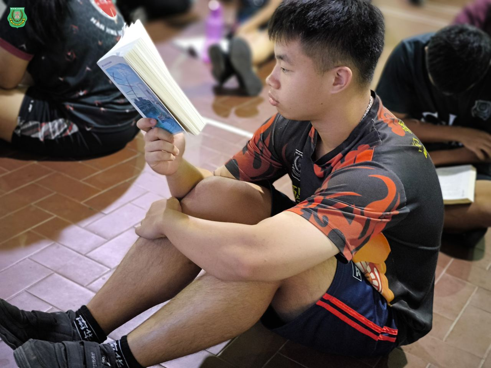
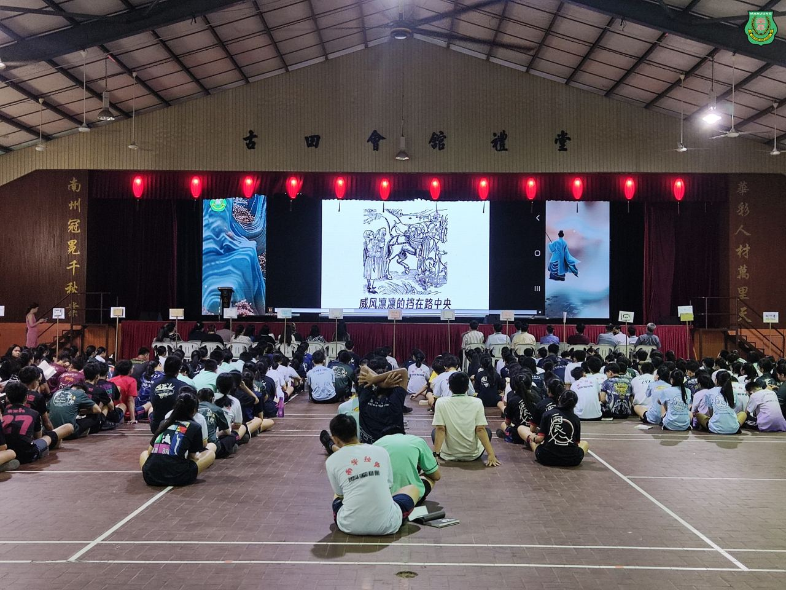
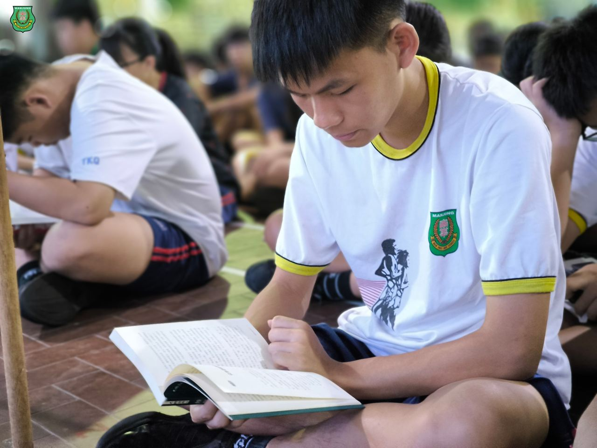
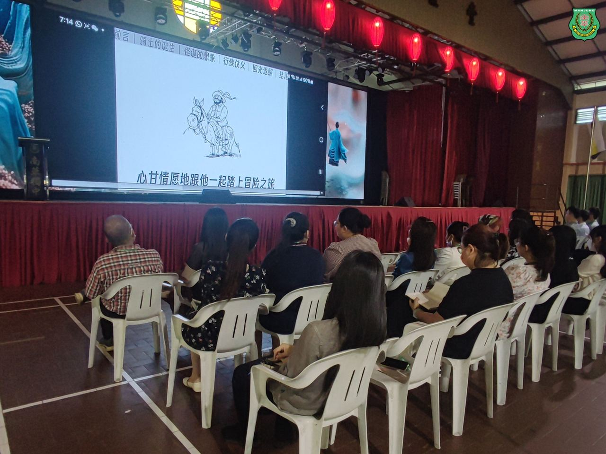

南华独中响应世界读书日
南华独中响应世界读书日
办全校性读书会提升阅读风气
南华独中为了响应4月23日世界读书日，以阅读丰富心灵的居所，特此举办“南华悦读”，号召全校师生共聚礼堂享受集体阅读带来的喜悦时光。
在这一小时的阅读活动中，每位参与者都带来了一本自己心仪的书籍。礼堂内座无虚席，师生们或静坐或斜倚，各自沉浸在书页中的世界。这个画面不仅展示了南华独中学生多样的阅读兴趣和广泛的知识探索，也反映了学校社区对阅读的共同热情。
本校校长陈丽冰博士在活动开始前，先说明了4月23日世界读书日的缘起，并传授自身的阅读经验，阐明阅读在个人和社会发展中的核心作用。陈校长特别推荐了米格尔·德·塞万提斯的经典文学作品《唐吉珂德》，并导读了这部描绘理想主义和现实主义冲突的小说，希望能够起了抛砖引玉的作用，启发师生们追求高尚的理想。
陈校长在导读中指出：“在我们迅速变化的世界里，没有任何东西比文化更有力量，也没有什么比读书更能够赋予我们分量。《唐吉珂德》以其深刻的主题和丰富的情节，展示了对理想的追求如何转化为生活的动力。这本书教会我们，即使在现实生活的挑战面前，也不应放弃梦想和理想。”
南华独中的世界读书日活动不仅增强了学生们的阅读兴趣，也强化了学校作为推广读书文化和终身学习重要场所的地位。通过这样的活动，南华独中希望激励学生们在未来的日子里继续探索、学习和成长。
#世界读书日 #读书会 #南华悦读
#南华独中 #曼绒 #实兆远



